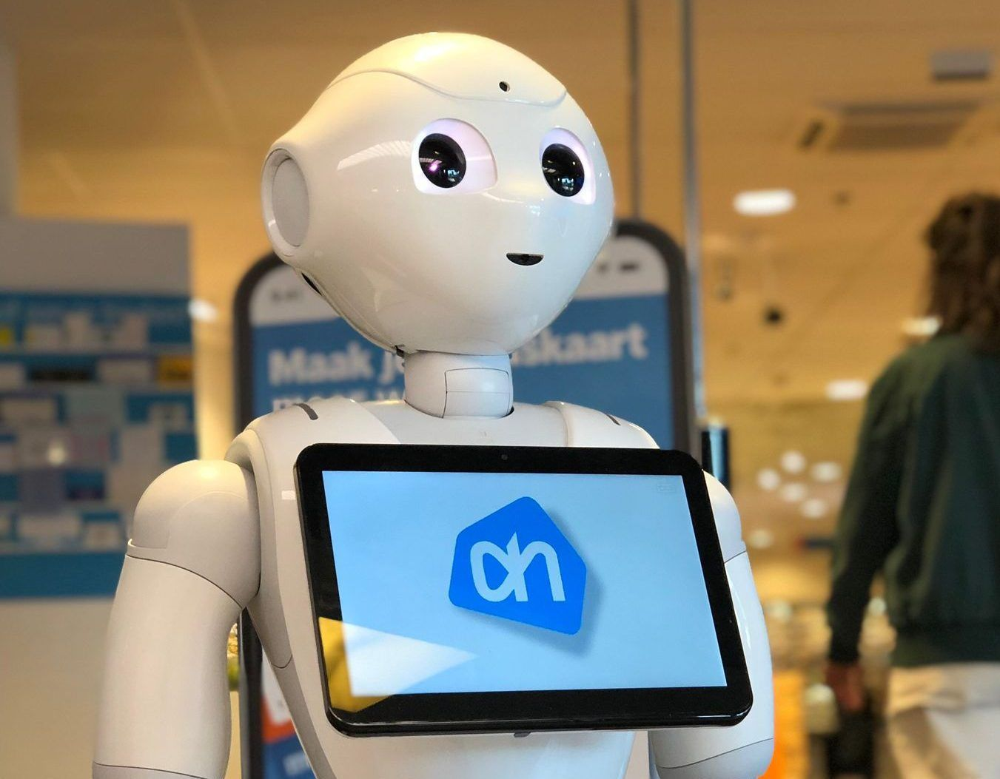

Understand the Technologies Changing the Physical World
In the modern world, smartphones have transformed how we live and work. Wireless technologies enable internet access,
mobile apps cater to phone usage, and secure protocols safeguard sensitive data. The smartphone itself, a crucial device,
completes the user experience. Likewise, the Fourth Industrial Revolution relies on 10 emerging technologies, categorized
into two groups, driving significant advancements.
Technologies Changing the Physical World
-Biotechnology
-Robotics
-3D printing
-New materials
-Internet of things (IoT)
-Energy capture, storage, and transmission
Biotechnology
Biotechnology is often associated with ideas like organ transplants or growing dinosaurs in a lab, inspired by movie. In reality, biotechnology has made significant impacts in medicine, agriculture, biofuel production, and addressing environmental issues. Researchers globally have achieved feats such as editing genes to treat diseases, modifying pig genomes for human organ transplants, creating touch-sensitive prosthetic limbs, and restoring eyesight for the blind. The integration of biotechnology with robotics, computers, and new materials promises future innovations. However, ethical concerns about genetically modified organisms, human genome changes, and potential environmental consequences accompany these advances.Robotics
-Rapid advancements in robotics are leading to big changes. But did you know that robots can do all of this?-Harvest crops
-Build cars
-Move warehouse inventory
-Assist in surgery
-Vacuum your floor while simultaneously entertaining your cat
Most things that you are too lazy to do yourself

The list goes on. If you think about it, a self-driving car is a kind of robot on wheels, you won't have to learn your driving license with that ! And many airports now use a robot to take your photo and handle your arrival document information. With advances in technology, robots are becoming more intelligent, adaptive, and flexible. Researchers are developing prosthetics and improved cybernetic enhancements that merge more deeply with the human body to restore physical capabilities a person lost or even provide new capabilities. As with biotechnology advances, robotics innovations raise ethical and practical concerns, particularly around augmenting the human body and the worry that robots replace workers, resulting in lost jobs.
3D Printing
3D printing technology allows the creation of physical objects layer by layer from a digital 3D model. Initially used for items like plastic statues, 3D printing has evolved to include materials such as aluminum, stainless steel, ceramics, and even biological tissues in a process known as bioprinting. This advancement opens doors to more cost-effective and customizable manufacturing, potentially reducing the need for traditional farming.While 3D printing is commonly used for everyday items and engineering components, researchers are pushing boundaries with the development of tiny 3D-printed "smart dust" devices. These minuscule devices, smaller than a grain of sand, possess computing power, sensors, wireless communication, and long battery life. They have the potential to revolutionize medical imaging, deliver medications, or monitor weather systems.
New Materials
Do you know what graphene is? No, it's not a tiny graph, and also it's not related to your No. 2 graphite pencil. Graphene is: 200 times stronger than steel1 million times thinner than a human hair
An efficient conductor of heat and electricity
Graphene is just one example of what's called new materials. These are designed materials that are lighter, stronger, more readily recyclable, and more adaptive than materials we're familiar with now. Some new materials are being developed with smart attributes, like the ability to self-clean or self-heal. Imagine a metal that has a memory and can revert to its original shape, or ceramics and crystals that convert pressure into electric energy.

Internet of Things(IoT)
If you've tracked a package, experienced automated office lights, or used a heart rate monitor, you've encountered the Internet of Things (IoT). In this system, billions of devices connect to the internet, and trillions of sensors enable communication between devices and predict potential issues using artificial intelligence. IoT is shaping various aspects of life, from monitoring elevators to enhancing manufacturing supply chains and even improving crop yields through soil analysis.In the 4th Industrial Revolution, the digital infrastructure allows new technologies to integrate into our physical surroundings, influencing nearly every aspect of our lives. Energy is a key focus, with advancements in renewable energy, fuel efficiency, and storage playing a crucial role in addressing climate change and transitioning to a sustainable future. Unlike previous industrial revolutions that increased reliance on fossil fuels, the Fourth Industrial Revolution aims to promote clean and sustainable energy solutions.
Sources :
Technologies and trends of the Fourth Industrial Revolution Trailhead.sales.
Available at:
https://trailhead.salesforce.com/content/learn/modules/technologies-and-trends-of-the-fourth-industrial-revolution/understand-the-technologies-changing-the-physical-world (Accessed: 09 October 2023).